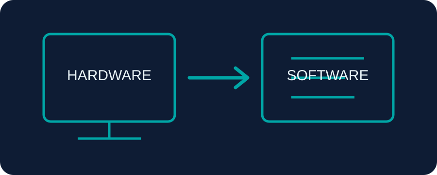
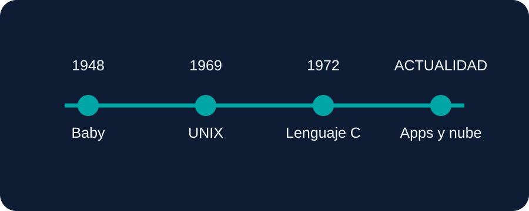

Software de sistema
Administra los recursos del dispositivo, como los sistemas operativos.
Un recorrido por la historia del software, su evolución y las profesiones que permiten crear, probar, proteger y mantener soluciones digitales.
Es el conjunto de programas, instrucciones y datos que permiten que un dispositivo realice tareas. A diferencia del hardware, que corresponde a las partes físicas, el software indica cómo debe funcionar el equipo.

En los primeros computadores se utilizaban instrucciones de lenguaje máquina. El 21 de junio de 1948, la computadora experimental Manchester Baby ejecutó un programa almacenado, un hito importante en la historia de la computación. Más adelante, sistemas como UNIX y lenguajes como C ayudaron a ampliar las posibilidades del software.

Fuentes: The Open University y Computer History Museum.
Administra los recursos del dispositivo, como los sistemas operativos.
Ayuda a realizar tareas: escribir documentos, comunicarse o editar imágenes.
Incluye herramientas para crear y comprobar otros programas.
Diseña, desarrolla y mantiene sistemas de software.
Crea sitios y aplicaciones que funcionan en navegadores.
Desarrolla programas para teléfonos y tabletas.
Protege redes, sistemas y datos frente a amenazas digitales.
Organiza, administra y protege información.
Estudia algoritmos, programación y fundamentos de la computación.
Consulta también el panorama de ocupaciones de informática del BLS.
Pensamiento lógico, creatividad, resolución de problemas, atención al detalle, comunicación, trabajo en equipo y disposición para aprender constantemente.
Identificar una necesidad → analizar requisitos → diseñar → programar → probar → publicar → mantener y mejorar.
El software pasó de instrucciones sencillas a sistemas complejos que forman parte de la vida diaria. Su evolución abrió oportunidades en distintas carreras tecnológicas. Aprender sus fundamentos permite comprender la tecnología y crear soluciones útiles para la sociedad.